The slide of the lecture is on the left, the same figure or table on the right, computed in the browser from the same data. The ▶ button moves the parameter step by step; the “Worked example” boxes redo the calculation with the numbers of the chapter.
Time series and stochastic processes · Stationarity · White noise and the random walk · The lag operator, differencing and the Wold decomposition · Sample ACF and PACF · Portmanteau tests: Box–Pierce and Ljung–Box · Transformations · Two classic series
Time series and stochastic processes
Four series of this course
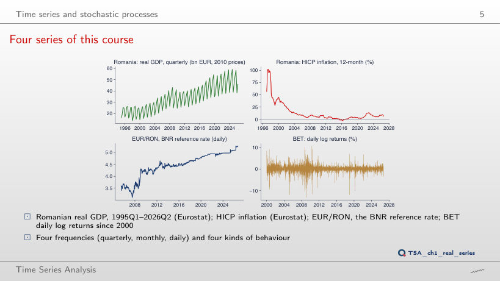
Answer
The BET returns: the mean is 0.18% in 2000–2004, −0.05% in 2008–2012, 0.03% in 2013–2017 and 0.07% in 2021–2025, all close to 0. The standard deviation changes, however: 1.48%, 2.04%, 0.78% and 0.88%. The mean of real GDP rises from 21.3 bn EUR in 1995–1999 to 48.1 bn EUR in 2021–2025, and the mean of inflation falls from 59.3% in 1995–1999 to 0.82% in 2013–2017: for these series the mean depends on the period.
An ensemble of paths
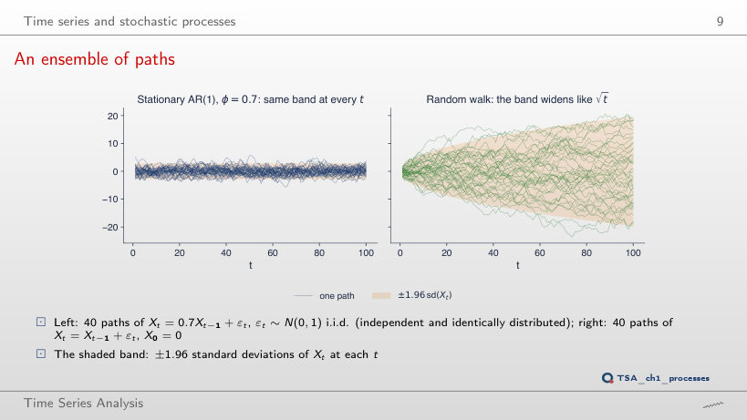
Answer
On the left it stays the same: Var(Xt) = 1/(1 − φ²) = 1.96 at every t, and the variance of the 40 values fluctuates around it with no trend (1.17 at t = 10, 2.44 at t = 50, 2.04 at t = 100): the process is stationary. On the right it grows with t: for the random walk Var(Xt) = t, the band ±1.96√t goes from ±6.20 at t = 10 to ±19.60 at t = 100, and the variance of the 40 values rises from 14.94 to 116.93. With a larger φ the band on the left widens (±13.89 at φ = 0.99), but it stays the same at every t.
Stationarity
Weakly but not strictly stationary
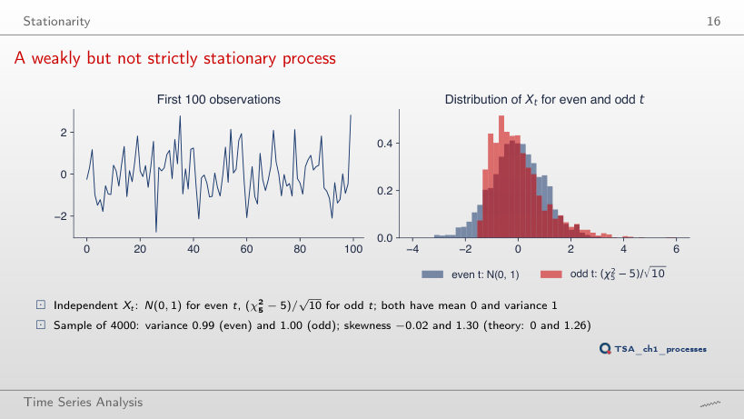
Answer
Only the shape. For every k, (χ²k − k)/√(2k) has mean 0 and variance 1, so the process stays weakly stationary. The theoretical skewness √(8/k) falls from 2.83 at k = 1 to 1.26 at k = 5 and 0.37 at k = 60 (in the sample: 2.80, 1.30, 0.35). P(Xt < −1.6) at odd t is 0 up to k = 5 and 4.2% at k = 60, against 5.9% at even t. For every finite k, the distributions at even and odd t differ, so the process is not strictly stationary.
Properties of the autocovariance function
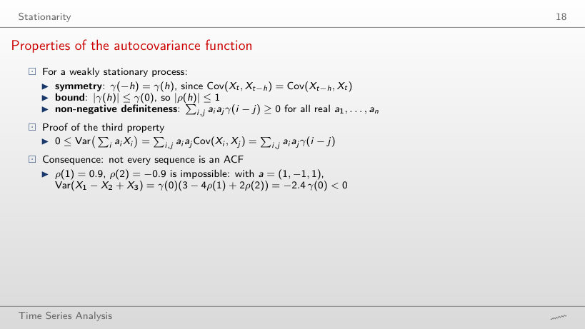
Worked example
Answer
From ρ(2) = 2 × 0.9² − 1 = 0.62. With a = (1, −1, 1) the variance is γ(0)(3 − 4ρ(1) + 2ρ(2)): −2.4γ(0) at ρ(2) = −0.9 and 0 at ρ(2) = 0.30. Between 0.30 and 0.62 this vector shows no contradiction, but the smallest eigenvalue of the autocorrelation matrix is still negative (−0.13 at ρ(2) = 0.30, −0.01 at 0.60): another vector a gives a negative variance. With a = (1, −1, −1) and the values of the slide the variance is 4.8γ(0) > 0, so the contradiction appears only with the vector (1, −1, 1).
Worked example: a moving average of order 1
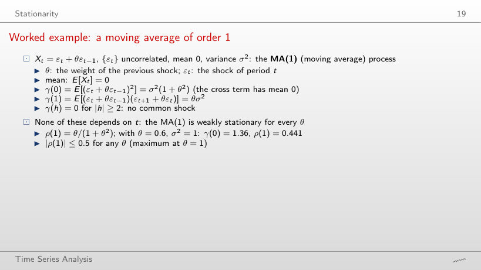
Worked example
Answer
Yes: θ = 1/0.6 = 1.67, because θ/(1 + θ²) does not change when θ is replaced by 1/θ; on the slider, θ = 1.65 gives ρ(1) = 0.443 and θ = 1.70 gives 0.437. The two processes have the same ACF but a different γ(0): 1.36 at θ = 0.6 and 3.72 at θ = 1.65 (σ² = 1). ρ(1) alone does not identify θ; |ρ(1)| reaches its maximum 0.5 at θ = 1.
Worked example: an autoregression of order 1
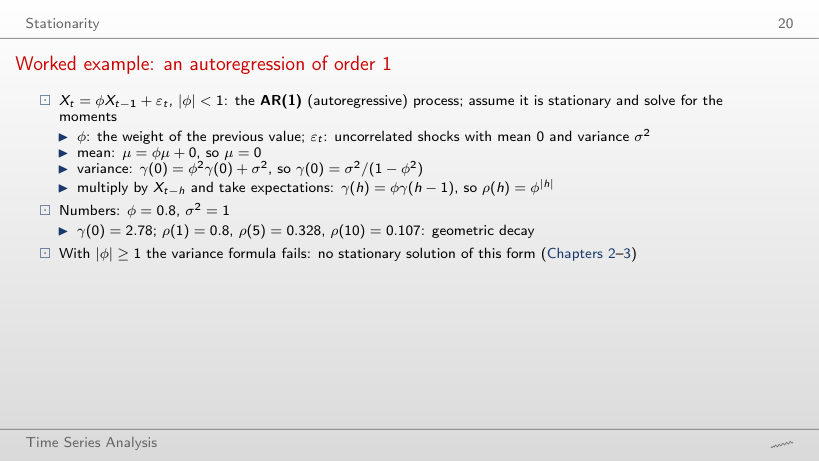
Worked example
Answer
A smaller and smaller share: 99.3% at φ = 0.8, 67.6% at φ = 0.95 and 19.8% at φ = 0.99, because the share is 1 − φ22. The sum itself, γ(0)/σ² = 1/(1 − φ²), rises from 2.78 to 10.26 and 50.25, and a shock loses half of its effect after 3.1, 13.5 and 69.0 periods. The closer φ is to 1, the more the distant shocks matter.
Question for the room: which series are stationary?
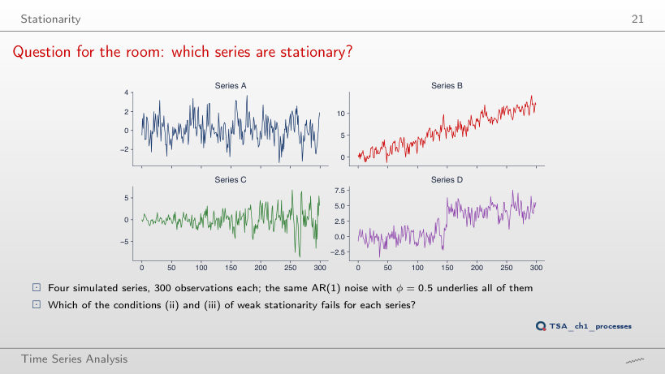
Answer
Only series A is stationary. B has the deterministic trend μt = 0.04t: condition (ii) fails, and the mean is 2.84 in the first half and 9.05 in the second. C has a standard deviation 7.5 times larger at the end than at the start (1.09 and 2.74 over the two halves): condition (iii) fails at h = 0. D has a level shift of +4 at t = 150, which moves the mean from −0.07 to 4.19: condition (ii). The ▶ button runs a rolling window of 50 observations over the series: for A the window mean stays between −0.13 and 0.39 (windows ending at t = 49, 149, 199 and 299), for B it rises from 0.95 to 11.10, for C the standard deviation grows from 0.67 to 3.70, and for D the mean jumps from 0.19 (t = 100–149) to 3.99 (t = 150–199).
White noise and the random walk
Three kinds of white noise
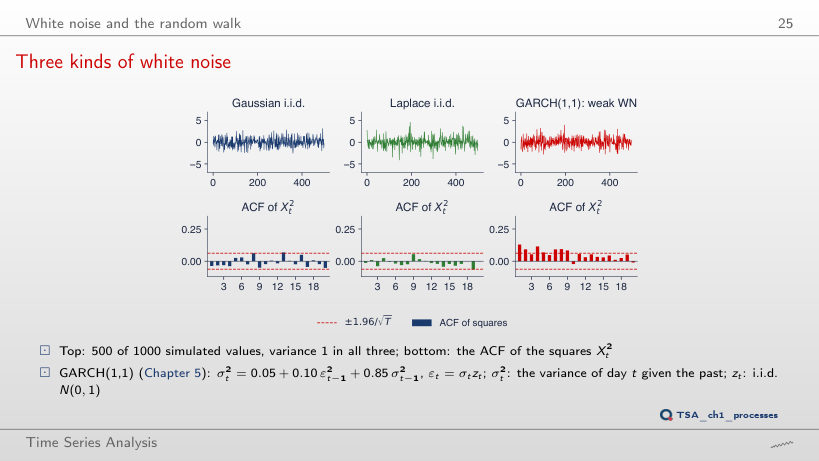
Answer
For the GARCH it grows with T: 17.8 (p = 0.059) at T = 100, 42.5 at T = 500 and 73.2 at T = 1000 (p < 0.001); from T = 150 on the test rejects at every step. For the i.i.d. noises the statistic does not grow with T: it stays between 2.0 and 21.4 for the Gaussian series and between 3.2 and 8.0 for the Laplace series. The Gaussian series nevertheless rejects at T = 150 and 200 (p = 0.039 and 0.018): a false rejection, which happens in about 5% of the samples. The GARCH squares are correlated although the series stays uncorrelated; with T = 1000, Q*(10) is 9.3 at α = 0 and 838.9 at α = 0.14.
Random walks and their variance
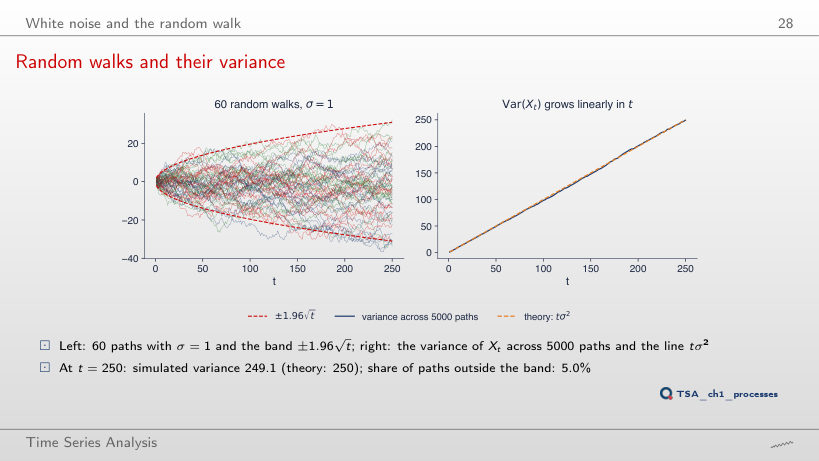
Worked example
Answer
No. Over the 5000 paths, the correlation is 0.708 between X10 and X20 and 0.954 between X100 and X110, like the theoretical values √(t/s) = 0.707 and 0.953. For a stationary process the correlation would depend only on the lag. The variance also grows with t: 10.1 at t = 10, 98.1 at t = 100 and 249.1 at t = 250 (theoretical tσ²).
Question for the room: which one is real?
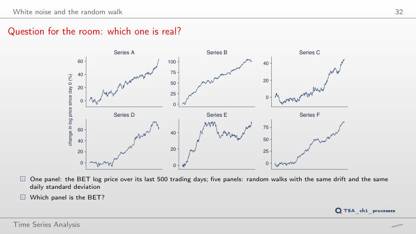
Answer
Series D: the BET, 11 September 2024 – 18 September 2026. By eye it cannot be told apart from the random walks. Its daily changes set it apart: ρ̂(1) = 0.123, and the p-value of the Ljung–Box test Q*(10) is 0.018, the only one below 5% among the six series; for the simulated random walks the p-values lie between 0.377 and 0.911.
The lag operator, differencing and the Wold decomposition
Differencing
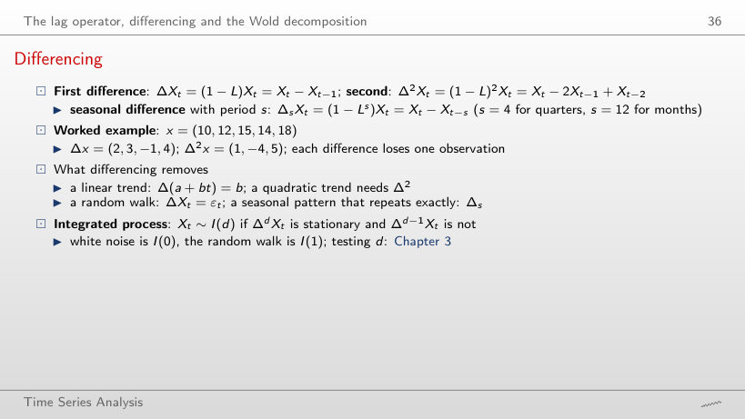
Worked example
Answer
The quarterly growth rate is positive, 7.76% (log) and 8.07% (simple), because the not seasonally adjusted GDP of the second quarter is always above that of the first. The annual growth rate, 100 Δ4 ln Yt = −9.87%, compares the quarter with the same quarter of 2019 and shows the pandemic fall. On not seasonally adjusted data, Δ mixes the season with the economy, and Δ4 separates them.
S&P 500: the level and its difference
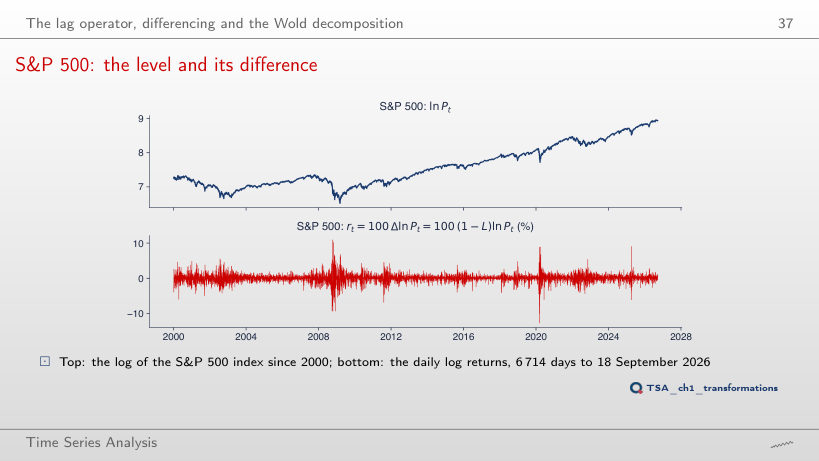
Answer
−0.543. The returns are already close to white noise (ρ̂(1) = −0.099), and the difference of white noise is an MA(1) with ρ(1) = −0.5: one more difference creates negative autocorrelation and raises the standard deviation from 1.21% to 1.80%. The level ln Pt has an ACF of 0.999 at lag 1 and 0.973 at lag 50; at lag 1 the ACF stays above 0.99 for every start of the sample between 2000 and 2024.
Wold weights of four processes
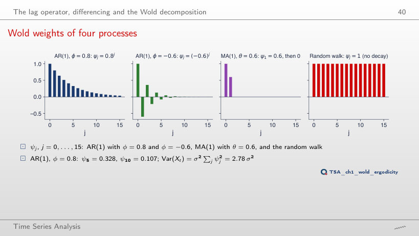
Answer
It rises: Σψj² = 1/(1 − φ²) is 1 at φ = 0, 2.78 at φ = 0.8 and 10.26 at φ = 0.95, where ψ10 = 0.599. At φ = 1, ψj = 1 for every j, as for the random walk (the dots in the last panel reach the bars), and the sum is infinite: the process no longer has a Wold form and is no longer stationary. The second panel, with −φ, has the same sum, because ψj² = φ2j; for the MA(1), Σψj² = 1 + θ² stays at most 2.
Time averages: ergodic and non-ergodic
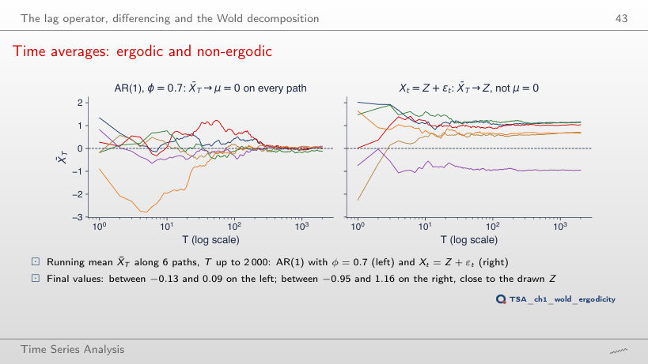
Answer
On the left, μ = 0 on every path: X̄T lies between −1.95 and 0.77 at T = 10, between −0.33 and 0.63 at T = 100 and between −0.13 and 0.09 at T = 2000; the AR(1) is ergodic for the mean. On the right, each average approaches its own Z: at T = 2000 the averages lie between −0.95 and 1.16, like the drawn values of Z (between −0.99 and 1.15), and the spread does not shrink with T. With φ closer to 1, convergence on the left is slower: the standard deviation of X̄2000 is about 1/((1 − φ)√T), that is 0.075 at φ = 0.7 and 2.24 at φ = 0.99.
Sample ACF and PACF
Sample autocovariance and autocorrelation
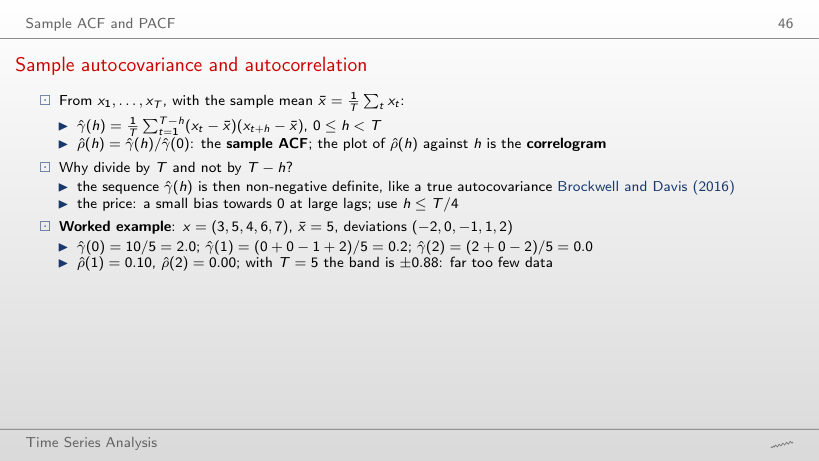
Worked example
Answer
At k = 3 and k = 4: ρ̂(3) = −0.20 and ρ̂(4) = −0.40, against ρ̂(1) = 0.10 and ρ̂(2) = 0.00. ρ̂(4) comes from a single product, (−2) × 2 = −4, divided by T = 5, and stays inside the band ±0.88. With T = 5 no autocorrelation can be separated from noise; this is why we use h ≤ T/4.
Confidence bands for the sample ACF
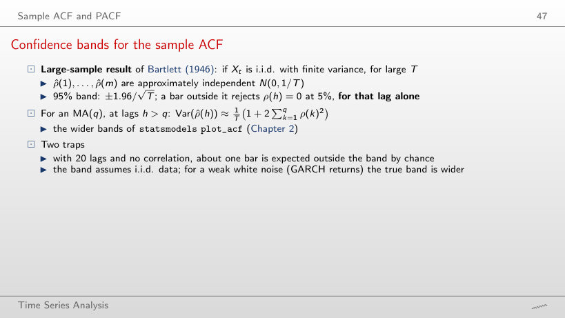
Worked example
Answer
Twice as wide: ±0.361 against ±0.175, because ρ̂(1), …, ρ̂(7) of this seasonal series are large (Σρ̂(k)² = 1.62). ρ̂(8) = 0.93 stays outside both bands. Of 20 lags, all 20 bars fall outside ±1.96/√T and 10 outside the Bartlett band. For the BET returns, the Bartlett band at h = 5 is ±0.0243, almost the same as ±0.0240: there the two bands give the same answer.
Sampling distribution of the sample ACF
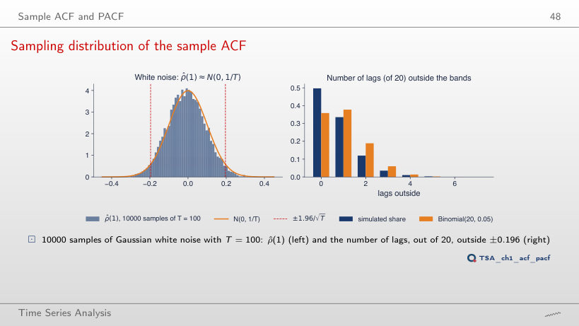
Answer
More and more often: in 4.5% of the samples at m = 1, 20.3% at m = 5 and 50.3% at m = 20, although there is no correlation at all. With independent tests it would be 1 − 0.95m: 5.0%, 22.6% and 64.2%; at large lags Var(ρ̂(h)) < 1/T, so slightly fewer bars fall outside. At m = 20, on average 0.73 bars fall outside. On the left, the samples with at least one bar outside the band (red) often have ρ̂(1) close to 0: the alarm comes from the other lags.
Theoretical and sample ACF of four processes
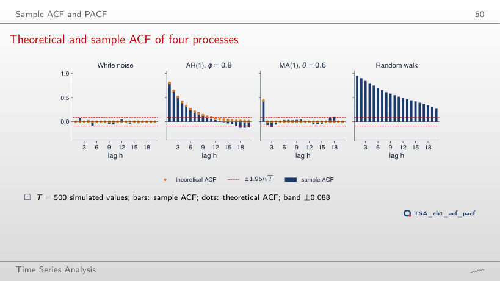
Answer
It rises: ρ̂(10) is −0.08 at T = 50, 0.37 at T = 100 and 0.55 at T = 500. The random walk has no theoretical ACF, and the decay of its sample ACF depends on the length of the sample. For the AR(1) with φ = 0.8, ρ̂(10) approaches the theoretical value 0.11: −0.14 at T = 50, 0.11 at T = 100 and 0.09 at T = 500, while the band narrows from ±0.277 to ±0.088.
ACF and PACF of three processes
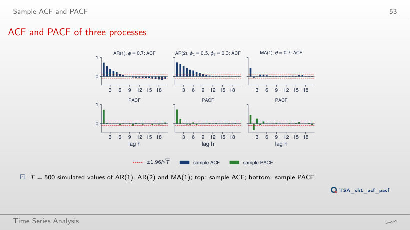
Answer
The coefficient φ₂: φ̂22 = −0.40 for φ₂ = −0.4, −0.03 for φ₂ = 0 and 0.38 for φ₂ = 0.45 (in theory, φ22 = φ₂). φ̂33 stays inside the band (0.05, 0.04, −0.01): the PACF cuts off after lag 2. ρ̂(2) does not follow φ₂: at φ₂ = 0 it is 0.28, close to ρ(2) = φ₁² = 0.25. At the same time φ̂11 of the AR(1) follows φ (−0.38 at φ = −0.4 and 0.48 at φ = 0.45), and ρ̂(1) of the MA(1) follows θ/(1 + θ²) (−0.30 and 0.37; in theory −0.345 and 0.374).
BET: ACF of returns, absolute and squared returns
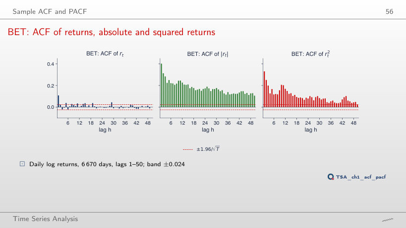
Answer
For the returns, no: ρ̂(1) = −0.099 for the S&P 500 and 0.109 for the BET (0.170 for EUR/RON). For the squares, yes: ρ̂(1) = 0.31 for the S&P 500 and 0.33 for the BET, with Q*(10) = 6133 and 2440. The sign of the autocorrelation of returns differs from one market to another, while volatility clustering appears in all three. If the BET sample starts in 2013, ρ̂(1) falls to 0.054 for the returns and to 0.18 for the squares.
Portmanteau tests: Box–Pierce and Ljung–Box
Worked example: the Ljung–Box statistic
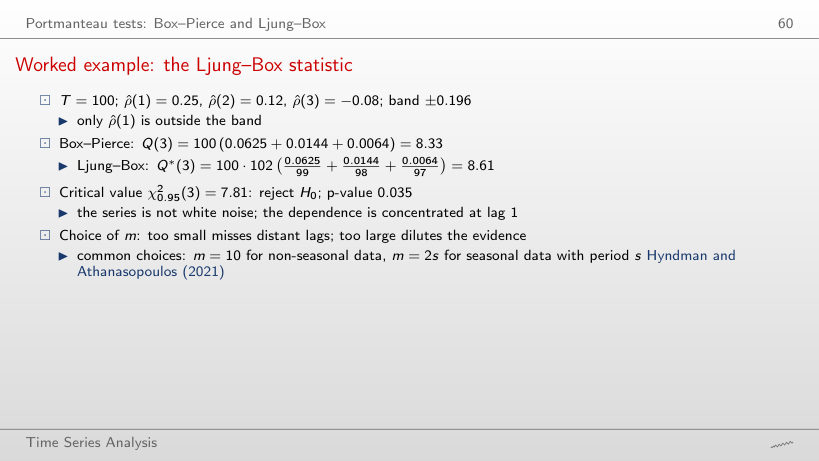
Worked example
Answer
It rises: 0.011 at m = 1 (Q*(1) = 6.44), 0.019 at m = 2 (Q*(2) = 7.94) and 0.035 at m = 3 (Q*(3) = 8.61). The statistic grows a little, because ρ̂(2) and ρ̂(3) are small, while the critical value gains one degree of freedom at each lag: too large an m dilutes the evidence. Box–Pierce gives Q(3) = 8.33, with p = 0.040.
Box–Pierce and Ljung–Box in small samples
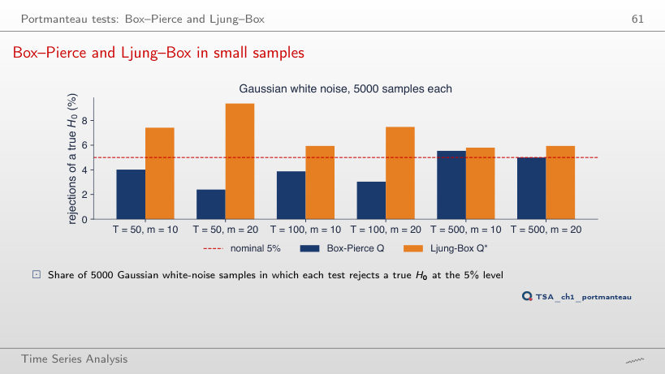
Answer
In opposite directions. Box–Pierce rejects the true hypothesis in 4.5% of the samples at m = 1, in 4.0% at m = 10 and in 2.4% at m = 20; Ljung–Box in 5.2%, 7.4% and 9.4%. With T = 500 and m = 20 the rates are 5.0% and 5.9%. This is why we keep m well below T (for example, m ≤ T/5).
Ljung–Box statistics of real series
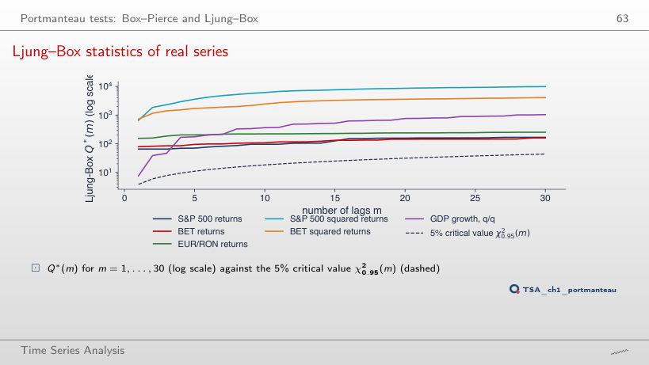
Answer
No: Q*(10) = 14.3, p = 0.161, below the critical value 18.31. On the full sample, with 6670 days, Q*(10) = 108.0, p < 0.001. The small autocorrelation of the BET returns (ρ̂(1) = 0.11) needs many observations to be separated from noise; the non-rejection does not show that the series is white noise. The squares reject on the short sample too: Q*(10) = 68.6 for the BET and 103.0 for the S&P 500.
Interpreting the Ljung–Box statistics
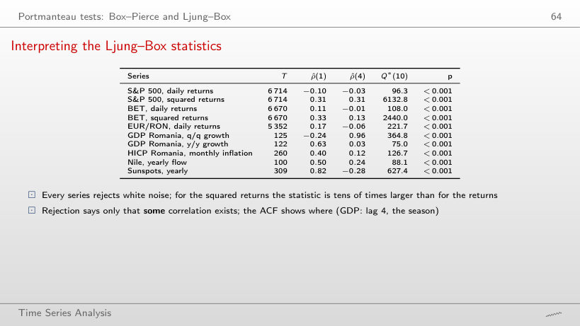
Answer
The quarterly GDP growth: Q*(1) = 7.7, p = 0.006, only 2.0 times the critical value 3.84. At m = 4, Q*(4) = 168.1 against 9.49, because ρ̂(4) = 0.96: the season. All 10 series reject white noise for every m between 1 and 30; at m = 10 the smallest ratio belongs to the annual GDP growth, 4.1.
Transformations
Romanian real GDP: log, quarterly and annual growth
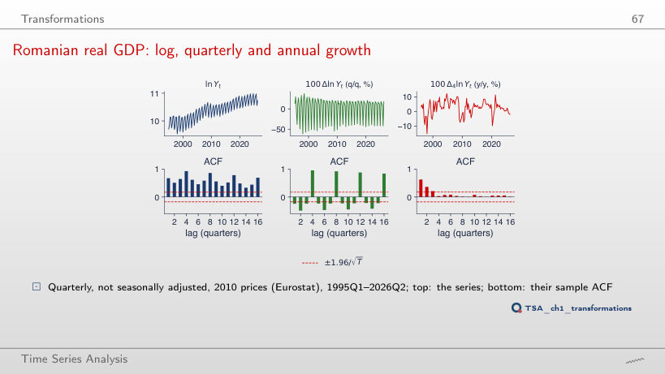
Answer
For k = 4: ρ̂(4) = 0.03. For k = 1, 2, 3 and 5, ρ̂(4) stays between 0.94 and 0.96: a difference that does not cover a whole year keeps the season. k = 8 removes the season too, but ρ̂(4) = 0.52, because two two-year growth rates one year apart share a year. The annual growth rate, k = 4, has a mean of 2.73% and ρ̂(1) = 0.63.
The Box–Cox transformation
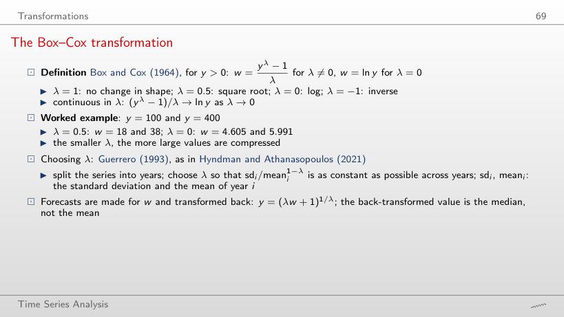
Worked example
Answer
No: for real GDP, λ̂ = 0.39, with criterion 0.110, against 0.165 at λ = 0 and 0.218 at λ = 1. For nominal GDP, λ̂ = 0.02 and the criterion is 0.243 both at λ̂ and at λ = 0, so we choose the logarithm. The value of λ̂ depends on the series; for the HICP index, λ̂ = 0.87.
Box–Cox for Romanian nominal GDP
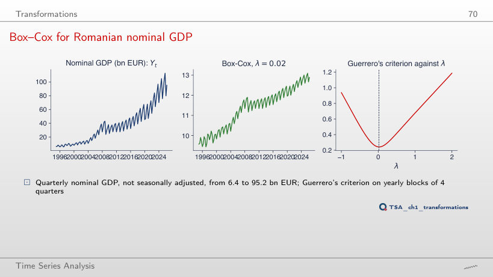
Answer
10.5 times: 3059 million EUR in the first five years and 32155 in the last five, because the seasonal swing is a stable share of the level. With λ = 0, the logarithm, the ratio is 1.07 (0.392 and 0.420), and Guerrero's criterion, 0.243, is practically the minimum reached at λ̂ = 0.02; at λ = 1 the criterion is 0.677.
Over-differencing
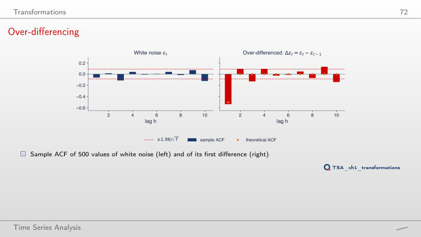
Answer
It rises from −0.54 towards 0: −0.28 at φ = 0.5, −0.10 at φ = 0.9 and −0.06 at φ = 1, in line with the theoretical value −(1 − φ)/2. Differencing is appropriate only for the random walk, where ΔXt = εt; for a stationary series, a negative ρ̂(1) close to −0.5 signals over-differencing. The variance of the first difference falls from 2.01 to 0.95.
Two classic series
The Nile and the sunspots: series and ACF
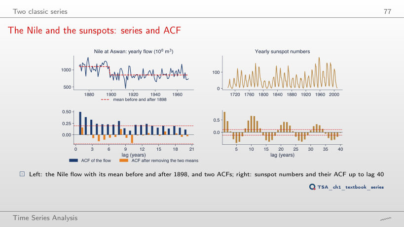
Answer
It is smallest around 1898: 0.13 for a break after 1897 and 0.16 after 1898, with Q*(10) = 13.0 (p = 0.225). With the break after 1880 or after 1920, ρ̂(1) is 0.40 and 0.42, and after 1950 it is 0.50, the value of the flow itself. A large part of the autocorrelation of the flow comes from the change in the mean around 1898. For the sunspots the same operation hardly changes the ACF: with the break after 1898, ρ̂(1) = 0.81 (0.82 before) and the peak at lag 10 is 0.64 (0.66 before), because their autocorrelation comes from the cycle of about 11 years, not from a break.
Simulations: shocks drawn with the seeds of the chapter code; when the parameters differ from those of the lecture, the series is recomputed from the same shocks or simulated in the browser. Real and nominal GDP: Eurostat, quarterly, not seasonally adjusted, in the version used in the lecture. HICP: Eurostat, up to August 2026. EUR/RON: BNR reference rate. BET and S&P 500: the course market data (EODHD), up to 18 September 2026. The Nile and the sunspots: the statsmodels data sets.